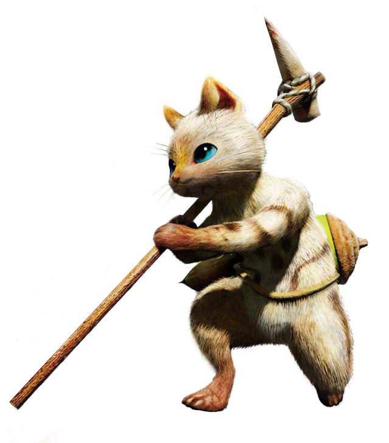
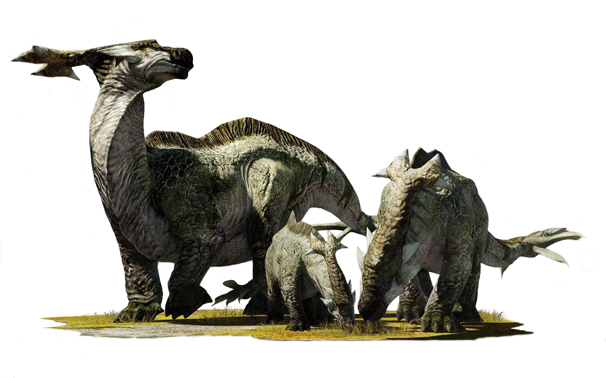
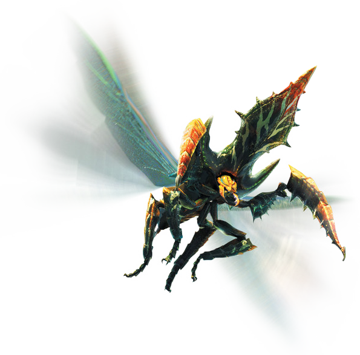
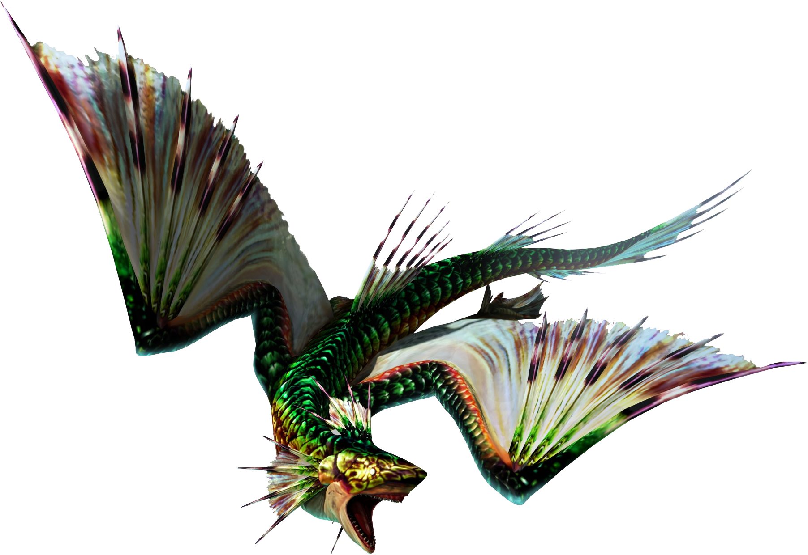
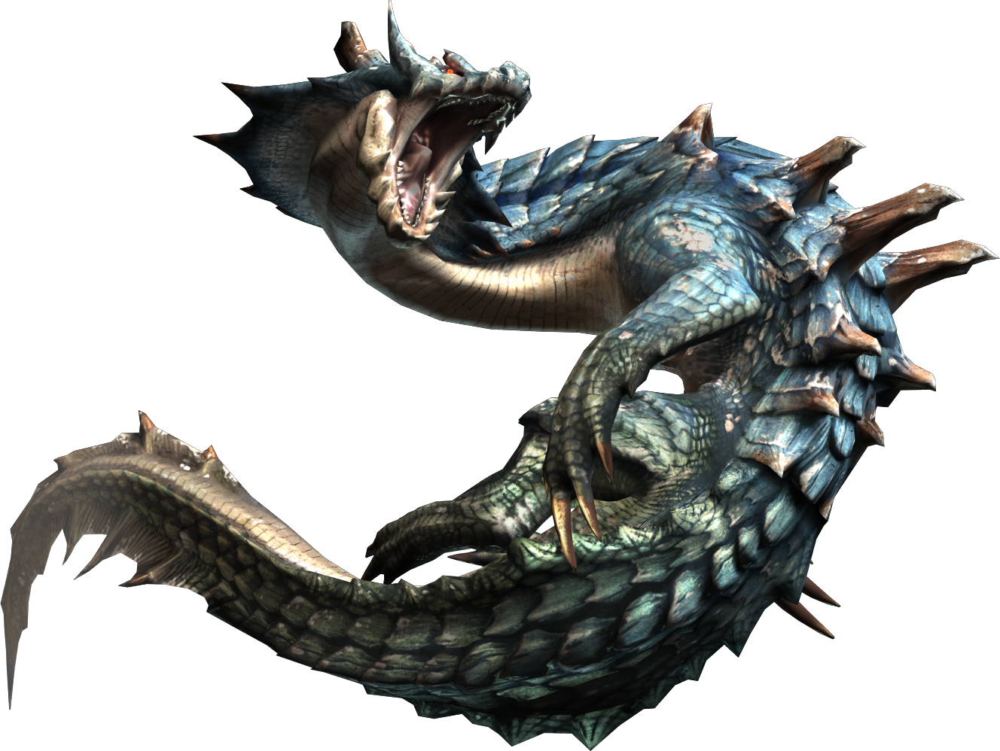
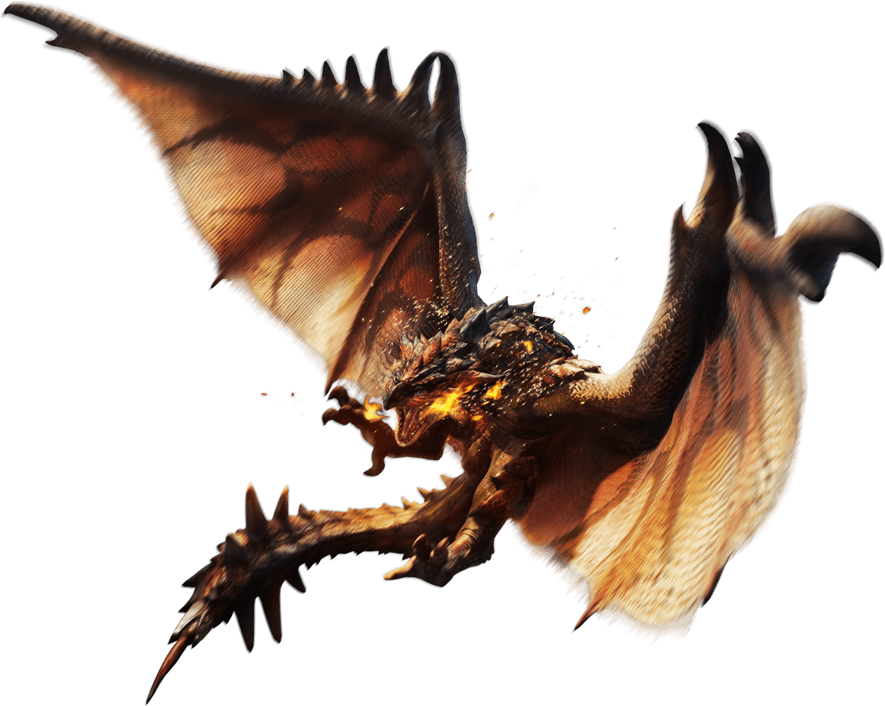
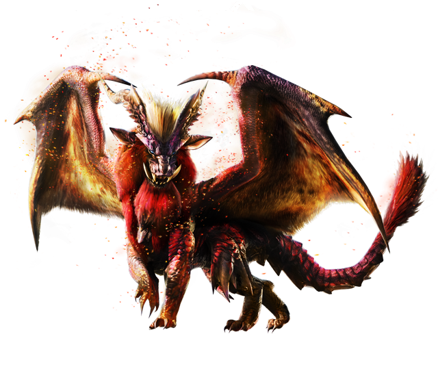
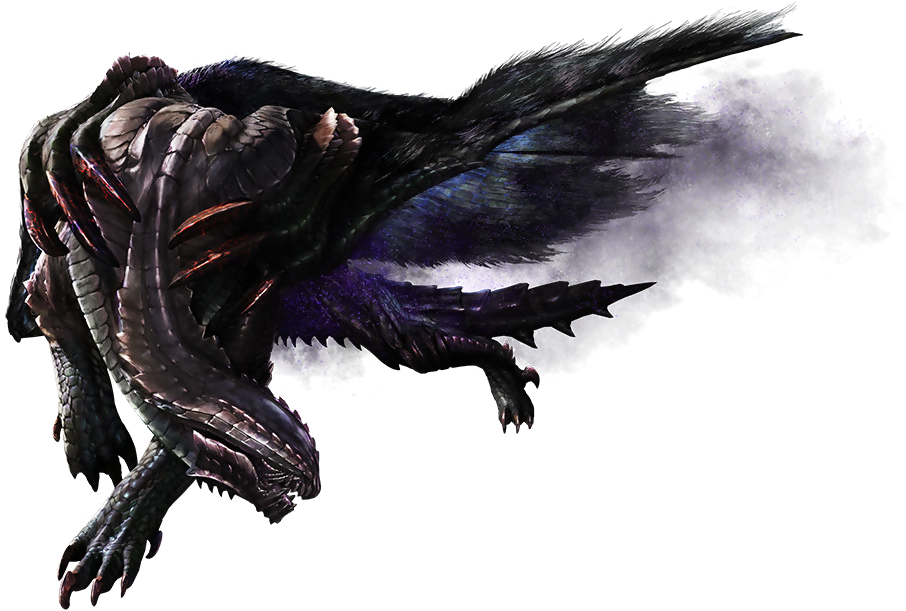

BESTIARIO
Aquí encontrarás algunos de los monstruos, criaturas y bestias que conocerás en tu aventura
como cazador. La diversidad de estas es muy ámplia, yendo desde los mas sencillos y débiles, como
los herbívoros, hasta criaturas cuyos poderes pueden ser comparados con dioses.
El Bestiario agrupa todas las clasificaciones de monstruos existentes en todo Monster Hunter y muestra datos generales de cada clase, así como los monstruos pertenecientes a cada grupo.
Aunque muchos grupos clasifican a los monstruos según su parentesco, otros sólo agrupan a monstruos que no están relacionados, pero que poseen una característica común.
Lynian
Seres nativos de la tierra y dotados de una inteligencia mayor a la de otros
monstruos, lo que les permite crear sociedades complejas con distintas
jerarquías y dominar un lenguaje propio, pueden incluso dominar el lenguaje
humano e incorporarse en la sociedad.

Herbívoros
Grupo que abarca a especies herbívoras, encontradas por todo el mundo y
siendo la presa de muchos depredadores. Algunos son pacíficos
y asustadizos mientras que otros pueden ser agresivos. La mayoría de ellos
no están relacionados entre sí y sólo entran en este grupo por su dieta.

Neopteron
Equivalentes a los insectos, estos monstruos invertebrados poseen una
gran diversidad de formas y tamaños y prosperan en todos los entornos.
Algunos habitan en enjambres o colonias liderados por una reina mientras
que otros son más solitarios o viven en pequeños grupos, algunos son
capaces de volar y otros sólo caminan, su alimentación es también muy
variada y pueden llegar a ser hábiles depredadores.

Wyvern Piscine
Wyverns cercanos a los peces, sin embargo, estos monstruos son capaces
de salir fuera del agua y habitar otros medios más duros como arena o lava.
Están cubiertos de escamas que denotan su origen, algunos mantienen
sus agallas, y todos poseen aletas de diversas formas que utilizan para nadar y
desplazarse en distintos terrenos. Muchos de ellos tienen patas
desarrolladas para moverse por tierra.

Leviathan
Wyverns parecidos a lagartos adaptados a medios acuáticos, aunque hay
algunos adaptados completamente al medio terrestre. Sus cuerpos
adaptados al entorno les permiten hacer frente a muchas amenazas.
Aunque los que son acuáticos pueden salir a tierra, se vuelven bastante
torpes y deben voler al agua tras un tiempo. Algunos poseen formas jóvenes
o dimorfismo sexual marcado.

Wyvern volador
Monstruos dotados de un par de alas, son la clase dominante en el mundo
de Monster Hunter. Aunque la mayoría se caracterizan por ser bípedos y
tener patas delanteras convertidas en alas, hay algunos cuyas alas se han
convertido parcial o completamente en patas para caminar de forma
cuadrúpeda. Prosperan en todos los entornos y son eficaces depredadores.

Dragón anciano
Caracterizados por tener normalmente cuatro patas y dos alas, su fuerza y
longevidad los convierten en criaturas de leyenda. El poder de muchos es
tal que pueden afectar al clima, por lo que las poblaciones humanas se
mantienen en constante alerta. Se pueden encontrar en muchos lugares,
desde entornos naturales a ruinas y fortificaciones.

???
Categoría en la que se clasifican aquellos monstruos que no encajan en
ninguna otra categoría. Oficialmente entran el Gore Magala y el Estrellian,
se cree que ambos son formas jóvenes de Dragones Ancianos.
